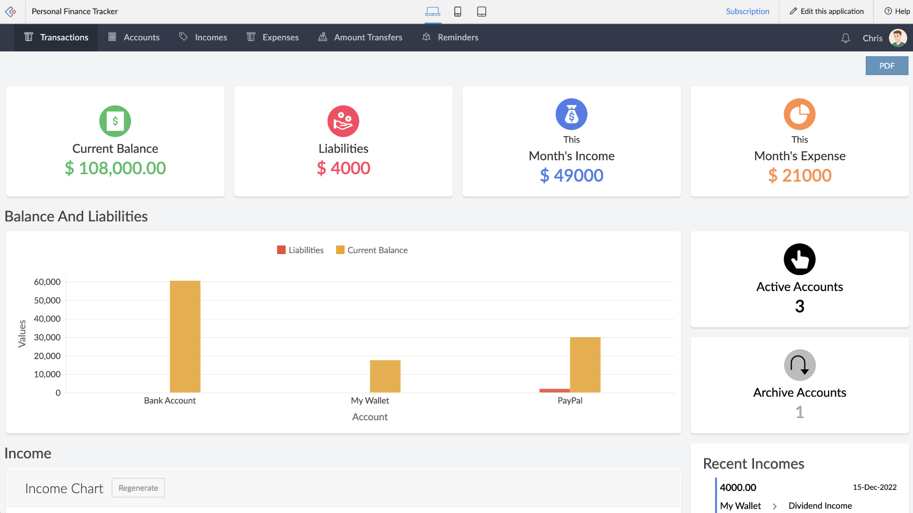
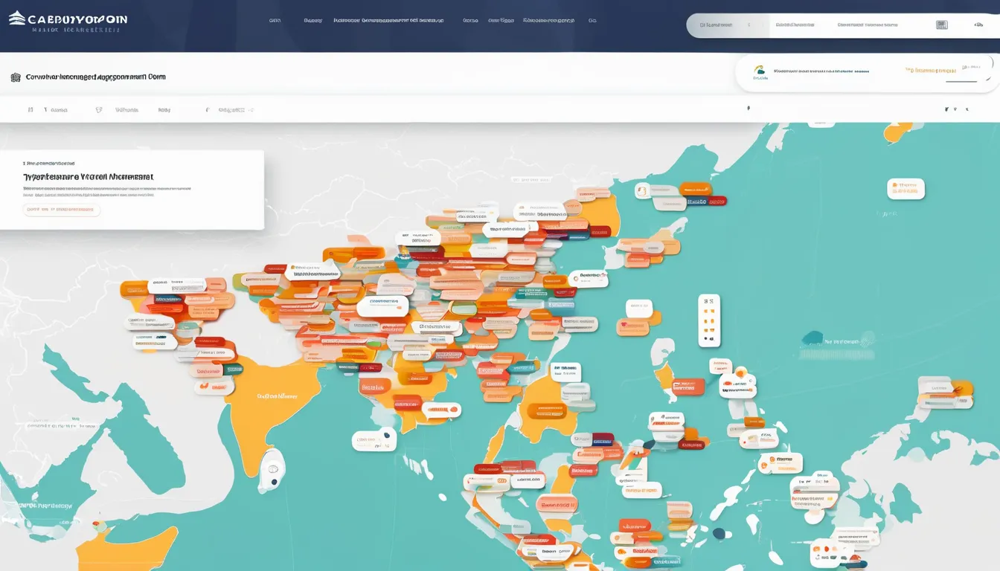

Projects
Project 1: Yugto
I am dedicated to continuing the development of Yugto, as it is a project that we worked hard on in the past and believe has great potential to transform last-minute studying into a more efficient and less stressful experience, improving academic performance and developing better study habits. Yugto is an innovative educational platform made to support students who often find themselves cramming or procrastinating. It offers tools and resources specifically designed to enhance productivity and manage time effectively, helping students stay organized and meet deadlines.
Project 2: Personal Finance Management Tool
The Personal Finance Management Tool is a web-based platform that allows users to effectively manage their finances by tracking expenses, setting budgets, monitoring savings goals, and analyzing spending habits. It includes features like automatic categorization of transactions, personalized budget alerts, expense visualization through interactive charts, and integration with bank APIs for real-time financial data synchronization. The tool aims to provide users with actionable insights and recommendations to enhance financial health and make informed monetary decisions.
Project 3: Crowdsourced Typhoon Management Platform
The Crowdsourced Typhoon Management Platform is a web-based application specifically designed to enhance response and coordination during typhoons. It enables users to report real-time information on typhoon impacts such as flooding, power outages, and structural damage, as well as request assistance and share resources like shelters and relief supplies. By leveraging community-sourced data alongside official updates, this platform aims to improve disaster preparedness, response, and recovery efforts during typhoon events.